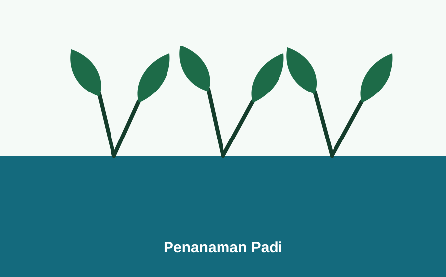
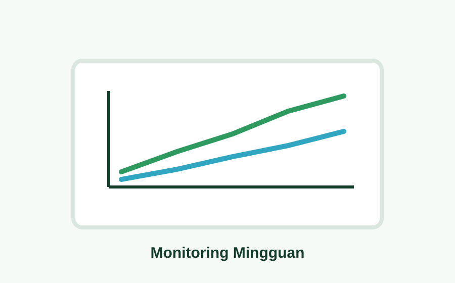

Timeline
Urutan kegiatan program KKN
Isi bagian ini dengan progres mingguan, kunjungan lapangan, pendataan UMKM, dan aktivitas monitoring demplot.
6
catatan kegiatan

Survei Potensi Desa
Pendataan awal lokasi, UMKM, produk unggulan, dan potensi pertanian di Desa Waru Barat.

Pendataan UMKM
Pengumpulan informasi nama usaha, pemilik, lokasi, produk, dan kebutuhan promosi digital.

Pembuatan Demplot Sawah Terapung
Persiapan media tanam apung, pengisian air, dan penanaman bibit padi.

Pembuatan Pupuk Organik
Pengolahan rumput dan bahan organik lokal sebagai pupuk sederhana untuk demplot.

Penebaran Belut
Belut ditebar pada area genangan setelah kondisi air dinilai stabil.

Monitoring Demplot
Pencatatan tinggi padi, jumlah daun, kondisi air, dan kondisi belut.
Galeri
Foto kegiatan pilihan
Ganti gambar placeholder dengan foto asli kegiatan KKN, UMKM, produk desa, dan demplot sawah terapung.
6
foto dummy




